종자기사 (2018-03-04 기출문제)
1과목: 종자생산학
1. 고추, 무, 레드클로버 종자의 형상은?
- 난형
- 도란형
- 방추형
- 구형
(정답률: 78%)

2. 다음 설명에 해당하는 것은?
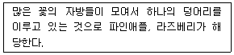
- 복과
- 위과
- 취과
- 단과
(정답률: 83%)
3. 발아억제물질인 coumarin이 영 부위에 존재하는 것은?
- 사탕무
- 보리
- 단풍나무
- 장미
(정답률: 72%)
4. ( )에 알맞은 내용은?
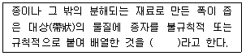
- 장환종자
- 피막처리종자
- 테이프종자
- 펠릿종자
(정답률: 86%)
5. 자식성 작물의 종자생산 관리체계에서 증식체계로 옳은 것은?
- 기본식물 → 원원종 → 원종 → 보급종
- 보급종 → 기본식물 → 원원종 → 원종
- 보급종 → 원원종 → 원종 → 기본식물
- 원종 → 보급종 → 원원종 → 기본식물
(정답률: 95%)
6. 자가수정만 하는 작물로만 나열된 것은? (단, 자가수정 시 낮은 교잡률과 자식열세를 보이는 작물은 제외)
- 옥수수, 호밀
- 참외, 멜론
- 당근, 수박
- 완두, 강낭콩
(정답률: 70%)
7. 다음 중 종자 안전건조온도의 적정 온도가 가장 낮은 것은?
- 벼
- 양파
- 순무
- 옥수수
(정답률: 72%)
8. 다음에서 설명하는 것은?
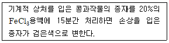
- 산화효소법
- ferric chloride법
- 과산화효소법
- 셀레나이트법
(정답률: 91%)
9. 다음에서 설명하는 것은?
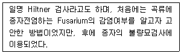
- 삼투압검사
- ATP검사
- GADA검사
- 와사검사
(정답률: 67%)
10. ( )에 알맞은 내용은?
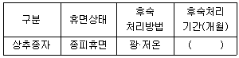
- 5~8
- 12~18
- 20~23
- 25~28
(정답률: 69%)
11. 수분의 자극을 받아 난세포가 배로 발달하는 것에 해당하는 것으로만 나열된 것은?
- 밀감, 부추
- 파, 달맞이꽃
- 목화, 벼
- 진달래, 국화
(정답률: 60%)
12. 무한화서이고, 작은 화경이 없거나 있어도 매우 짧고 화경과 함께 모여 있으며, 총포라고 불리는 포엽으로 둘러싸여 있는 것은?
- 두상화서
- 단정화서
- 단집산화서
- 안목상취산화서
(정답률: 66%)
13. 종자의 휴면 및 발아의 호르몬기구와 관련된 상호관계에서 휴면인 경우는?
- 지베렐린: 유, 시토키닌: 유, 억제물질(ABA): 무
- 지베렐린: 유, 시토키닌: 유, 억제물질(ABA): 유
- 지베렐린: 유, 시토키닌: 무, 억제물질(ABA): 유
- 지베렐린: 유, 시토키닌: 무, 억제물질(ABA): 무
(정답률: 83%)
14. 유채의 포장검사 시 포장격리에서 산림 등 보호물이 있을 때를 제외하고 원종, 보급종은 이품종으로부터 몇 m 이상 격리되어야 하는가?
- 300
- 500
- 800
- 1000
(정답률: 75%)
15. ( )에 알맞은 내용은?
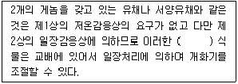
- 뇌수분형
- 종자춘화형
- 적심형
- 무춘화형
(정답률: 75%)
16. 여교배 중에서 F1을 양친 중 열성친과 교배하는 경우를 말하며, 주로 유전자분석을 목적으로 하는 것은?
- 검정교배
- 복교배
- 다계교배
- 3계교배
(정답률: 85%)
17. 제웅하지 않고 풍매 또는 충매에 의한 자연교잡을 이용하는 작물로만 나열된 것은?
- 벼, 보리
- 수수, 토마토
- 가지, 멜론
- 양파, 고추
(정답률: 59%)
18. “주피에 있는 구멍으로서 그 구멍을 통하여 자란 화분관이 난세포와 결합한다”에 해당하는 것은?
- 주심
- 에피스테이스
- 주병
- 주공
(정답률: 86%)
19. 감자의 포장검사에서 검사시기 및 회수에 대한 내용이다. ( 가 )에 알맞은 내용은?
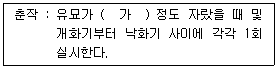
- 8cm
- 15cm
- 23cm
- 30cm
(정답률: 82%)
20. 다음 “수확적기의 종자의 수분함량” 관련 설명에 적합한 작물은?
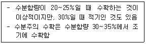
- 옥수수
- 콩
- 땅콩
- 밀
(정답률: 72%)
2과목: 식물육종학
21. 자가수정 작물 품종 간 단교잡 후대에서 개체선발을 시작할 수 있는 세대는?
- F1
- 양친 세대
- F4
- F2
(정답률: 57%)
22. 완전히 자가수정하는 동형접합체의 1개체로부터 불어난 자손의 총칭은?
- 유전자원
- 유전변이체
- 순계
- 동질배수체
(정답률: 81%)
23. 체세포의 염색체수가 2n인 농작물의 부위별 염색체수를 옳게 나타낸 것은? (단 왼쪽을 기준으로 배(胚), 배유(胚乳), 1핵기의 화분, 뿌리의 생장점 세포 순서임)
- n, 2n, 3n, 2n
- 2n, 3n, 2n, n
- 2n, 3n, n, 2n
- n, 2n, 2n, 3n
(정답률: 78%)
24. 콩과 식물의 제웅에 가장 적당한 방법은?
- 화판인발법(花瓣引拔法)
- 집단제정법(集團除精法)
- 절영법(切潁法)
- 수세법(水洗法)
(정답률: 74%)
25. 불임성 중 유전적 원인에 의한 것이 아닌 것은?
- 순환적 불임성
- 웅성불임성
- 자가불화합성
- 이형예현상
(정답률: 64%)
26. 수정을 거치지 않고 유성생식 기관 또는 거기에 부수되는 조직 및 세포로부터 배가 만들어지는 경우가 아닌 것은?
- 부정배형성
- 유배생식
- 복상포자생식
- 무포자생식
(정답률: 61%)
27. 돌연변이육종법의 특징이 아닌 것은?
- 품종 내 조화를 파괴하지 않고 1개의 특성만 용이하기 치환할 수 있다.
- 이형접합체 영양번식 식물에서 변이를 작성하기가 용이하다.
- 동질배수체의 임성을 저하시킬 수 있다.
- 상동이나 비상동 염색체 사이에 염색체 단편을 치환시키기가 용이하다.
(정답률: 60%)
28. 식물육종에서 추구하는 주요 목표라 할 수 없는 것은?
- 불량온도 등 환경스트레스에 대한 저항성 증진
- 비타민 등 영양분 개선에 의한 기계화 적응성 증진
- 병·해충 등 생물적 스트레스에 대한 저항성 증진
- 영양성분 및 물리적 특성 개선에 의한 품질개량
(정답률: 81%)
29. 배수체 작성을 위한 염색체 배가 방법이 아닌 것은?
- 콜히친처리법
- 자외선처리법
- 근친교배법
- 아세나프텐처리법
(정답률: 64%)
30. 일반조합능력에 이용되는 조합능력 검정법으로 가장 적당한 것은?
- 단교잡검정법
- 여교잡법
- 톱교잡검정법
- 다교잡검정법
(정답률: 70%)
31. 1대잡종 육종에서 조합능력의 개량이 필요한 이유는?
- 근연종간에 교잡을 위하여
- 순계를 육성하기 위하여
- 1대 잡종의 생산력을 높이기 위하여
- 교잡을 용이하게 하기 위하여
(정답률: 55%)
32. 육종집단의 변이 크기를 나타내는 통계치는?
- 평균치
- 최소치와 평균치의 차이
- 중앙치
- 분산
(정답률: 83%)
33. 내병성 품종의 육성이나 유전자의 분리 및 연관관계를 밝히는 방법으로 흔히 쓰이는 것은?
- 단교잡법
- 복교잡법
- 여교잡법
- 삼원교잡법
(정답률: 79%)
34. 반수체식물이 얻어지는 조직배양 기법은?
- 배유배양
- 약배양
- 생장점배양
- 세포융합
(정답률: 84%)
35. A/B//C 교배의 순서는?
- A와 B와 C를 함께 방임수분 함
- A와 B를 교배하여 나온 F1과 C를 교배 함
- A와 B를 모본으로 하고, C를 부본으로 하여 함께 교배 함
- B와 C를 모본으로 하고, A를 부본으로 하여 함께 교배 함
(정답률: 83%)
36. 동질배수체의 일반적인 특징이 아닌 것은?
- 핵과 세포가 커진다.
- 함유성분의 변화가 생긴다.
- 발육이 지연된다.
- 채종량이 증가한다.
(정답률: 63%)
37. 세포질적 웅성불임성에 해당하는 것은?
- 보리
- 옥수수
- 토마토
- 사탕무
(정답률: 54%)
38. 돌연변이육종과 관련이 가장 적은 것은?
- 감마선
- 열성변이
- 성염색체
- 염색체 이상
(정답률: 73%)
39. 집단 육종법과 파생계통 육종법의 차이점은?
- 집단육종법은 F2세대에서 선발을 거친다.
- 파생계통 육종법은 F2세대에서 선발을 거친다.
- 파생계통 육종법은 모든 세대에서 선발이 이루어진다.
- 후기 세대의 육종과정이 약간 다르다.
(정답률: 60%)
40. 종자번식 농작물의 일생을 순서대로 나타낸 것은?
- 배우자형성 → 결실 → 중복수정 → 영양생장 → 발아
- 영양생장 → 결실 → 발아 → 중복수정 → 배우자형성
- 발아 → 중복수정 → 배우자형성 → 결실 → 영양생장
- 발아 → 영양생장 → 배우자형성 → 중복수정 → 결실
(정답률: 81%)
3과목: 재배원론
41. 파종 양식 중 뿌림골을 만들고 그곳에 줄지어 종자를 뿌리는 방법은?
- 산파
- 점파
- 조파
- 적파
(정답률: 65%)
42. 토양 통기의 촉진책으로 틀린 것은?
- 배수 촉진
- 토양 입단 조성
- 식질토를 이용한 객토
- 심경
(정답률: 64%)
43. 침수에 의한 피해가 가장 큰 벼의 생육단계는?
- 분얼성기
- 최고분얼기
- 수잉기
- 등숙기
(정답률: 62%)
44. 추파성 맥류의 상적발육설을 주창한 사람은?
- 다윈
- 우장춘
- 바빌로프
- 리센코
(정답률: 70%)
45. 작물체 내에서의 생리적 또는 형태적인 균형이나 비율이 작물생육의 지표로 사용되는 것과 거리가 가장 먼 것은?
- C/N 율
- T/R 율
- G-D 균형
- 광합성-호흡
(정답률: 70%)
46. 군락의 수광태세가 좋아지고 밀식 적응성이 큰 콩의 초형이 아닌 것은?
- 꼬투리가 원줄기에 적게 달린 것
- 키가 크고 도복이 안 되는 것
- 가지를 적게 치고 마디가 짧은 것
- 잎이 작고 가는 것
(정답률: 59%)
47. 세포막 중 중간막의 주성분으로 잎에 많이 존재하며 체 내의 이동이 어려운 것은?
- 질소
- 칼슘
- 마그네슘
- 인
(정답률: 64%)
48. 다음 중 육묘의 장점으로 틀린 것은?
- 증수 도모
- 종자 소비량 증대
- 조기수확 가능
- 토지 이용도 증대
(정답률: 72%)
49. 좁은 범위의 일장에서만 화성이 유도 촉진되며, 2개의 한계일장을 가진 식물은?
- 장일식물
- 중일식물
- 장단일식물
- 정일식물
(정답률: 57%)
50. 내염성 정도가 강한 작물로만 짝지어진 것은?
- 완두, 셀러리
- 배, 살구
- 고구마, 감자
- 유채, 양배추
(정답률: 74%)
51. 다음 중 무배유 종자로만 짝지어진 것은?
- 벼, 밀, 옥수수
- 벼, 콩, 팥
- 콩, 팥, 완두
- 옥수수, 밀, 귀리
(정답률: 81%)
52. 광합성 연구에 활용되는 방사선 동위원소는?
- 14C
- 32P
- 42K
- 24Na
(정답률: 71%)
53. 변온이 작물 생육에 미치는 영향이 아닌 것은?
- 발아촉진
- 동화물질의 축적
- 덩이뿌리의 발달
- 출수 및 개화의 지연
(정답률: 55%)
54. 비료의 엽면흡수에 영향을 미치는 요인 중 맞는 것은?
- 잎의 이면보다 표피에서 더 잘 흡수된다.
- 잎의 호흡작용이 왕성할 때에 잘 흡수된다.
- 살포액의 pH는 알칼리인 것이 흡수가 잘 된다.
- 엽면시비는 낮보다는 밤에 실시하는 것이 좋다.
(정답률: 62%)
55. 이랑을 세우고 낮은 골에 파종하는 방식은?
- 휴립휴파법
- 이랑재배
- 평휴법
- 휴립구파법
(정답률: 65%)
56. 다음 중 동상해 대책으로 틀린 것은?
- 방풍시설 설치
- 파종량 경감
- 토질개선
- 품종선정
(정답률: 75%)
57. 화성유도 시 저온 장일이 필요한 식물의 저온이나 장일을 대신하는 가장 효과적인 식물호르몬은?
- 에틸렌
- 지베렐린
- 시토키닌
- ABA
(정답률: 62%)
58. 고온이 오래 지속될 때 식물체 내에서 일어나는 현상은?
- 당의 증가
- 증산작용의 저하
- 질소대사의 이상
- 유기물의 증가
(정답률: 65%)
59. 휴면연장과 발아억제를 위한 방법으로 틀린 것은?
- 에스렐 처리
- MH 수용액 처리
- 저온저장
- 감마선 조사
(정답률: 47%)
60. 교잡에 의한 작물개량의 가능성을 최초로 제시한 사람은?
- Camerarius
- Koelreuter
- Mendel
- Johannsen
(정답률: 54%)
4과목: 식물보호학
61. 상처가 아물도록 처리하여 저장할 경우 방제효과가 가장 큰 병은?
- 사과 탄저병
- 고추 탄저병
- 사과 겹무늬썩음병
- 고구마 검은무늬병
(정답률: 73%)
62. 살충제에 대한 해충의 저항성이 발달되는 가장 중요한 요인은?
- 살균제와 살충제를 섞어 뿌리기 때문에
- 같은 약제를 계속해서 뿌리기 때문에
- 약제를 농도가 진하게 만들어 조금 뿌리기 때문에
- 약제의 계통이나 주성분이 다른 약제를 바꾸어 뿌리기 때문에
(정답률: 85%)
63. 오염된 물보다는 주로 깨끗한 물에서 서식하는 곤충은?
- 꽃등에
- 나방파리
- 모기붙이
- 민날개강도래
(정답률: 76%)
64. 식물병이 크게 발생한 역사에 대한 설명으로 옳지 않은 것은?
- 19세기 말 스리랑카에서 커피 녹병 발생
- 1845년경 아일랜드에서 양배추 역병 발생
- 1970년경 미국에서 옥수수 깨씨무늬병 발생
- 일제강점기 우리나라에서 사탕무 갈색무늬병 발생
(정답률: 74%)
65. 농약제조용 증량제에 대한 설명으로 옳지 않은 것은?
- 증량제의 강도가 너무 강하면 농약 살포 때 살분기의 마모가 심하다.
- 증량제 입자의 크기는 분제의 분산성, 비산성, 부착성에 영향을 미친다.
- 농약의 저장 중 증량제에 의해 유효성분이 분해되지 않고 안정성이 유지되어야 한다.
- 증량제의 수분함량 및 흡습성이 높으면 살포된 농약의 응집력이 증대되어 분산성이 향상된다.
(정답률: 75%)
66. 자낭균에 속하는 병균은?
- 소나무 혹병균
- 잣나무 털녹병균
- 복숭아 잎오갈병균
- 사과 붉은별무늬병균
(정답률: 38%)
67. 주로 땅 속에서 작물의 뿌리를 가해하는 해충은?
- 도둑나방
- 조명나방
- 방아벌레
- 화랑곡나방
(정답률: 54%)
68. 잡초에 대한 설명으로 옳지 않은 것은?
- 번식력이 강하며 종자 생산량이 많다.
- 생태학적 천이과정이 극상에 이른 지역에서 많이 발생한다.
- 생태계의 구성원으로서 각자 고유한 생태적 지위를 가지고 있다.
- 한 지역에 발생하는 종의 수가 많아 다양한 유전적 특성을 지니고 있다.
(정답률: 71%)
69. 접촉형 제초제에 대한 설명으로 옳지 않은 것은?
- 시마진, PCP 등이 있다.
- 효과가 곧바로 나타난다.
- 주로 발아 후의 잡초를 제거하는 데 사용된다.
- 약제가 부착된 세포가 파괴되는 살초효과를 보인다.
(정답률: 71%)
70. 진균에 대한 설명으로 옳은 것은?
- 발달된 균사를 가지고 있다.
- 그람양성균과 그람음성균이 있다.
- 운동기관으로 편모를 가지고 있다.
- 효소계가 없으며 생명체 안에서만 증식이 가능하다.
(정답률: 62%)
71. 식물병 진단 방법에 대한 설명으로 옳지 않은 것은?
- 충체 내 주사법은 주로 세균병 진단에 사용된다.
- 지표식물을 이용하여 일부 TMV를 진단할 수 있다.
- 파지(phage)에 의한 일부 세균병 진단이 가능하다.
- 혈청학적인 방법은 바이러스병 진단에 효과적이다.
(정답률: 60%)
72. 잡초의 생태적 방제방법 중 경합특성 이용법에 해당되지 않은 것은?
- 관배수 조절
- 재식밀도 조절
- 육묘이식 재배
- 품종 및 종자 선정
(정답률: 62%)
73. 고추, 담배, 땅콩 등의 작물을 재배할 때 많이 사용되는 방법으로 잡초의 방제뿐만 아니라 수분을 유지시켜 주는 장점을 지닌 방법은?
- 추경
- 중경
- 담수
- 피복
(정답률: 69%)
74. 같은 작물을 동일한 포장에 계속 재배하였을 때 나타나는 연작장해 현상과 가장 관련이 깊은 병해는?
- 공기전염성 병해
- 종자전염성 병해
- 토양전염성 병해
- 충매전염성 병해
(정답률: 84%)
75. 파리목에 대한 설명으로 옳은 것은?
- 각다귀와 모기 등이 있다.
- 완전변태하며 번데기는 주로 대용이다.
- 파리목은 크게 4개의 아목으로 나눠진다.
- 뒷날개가 퇴화되어 반시초를 이루고 있다.
(정답률: 54%)
76. 벼 줄무늬잎마름병과 벼 검은줄오갈병을 예방하기 위해 방제해야 하는 해충은?
- 독나방
- 애멸구
- 혹명나방
- 벼모기붙이
(정답률: 85%)
77. 어떤 유제(50%)를 1000배로 희석하여 150L를 살포하려 한다면 이 유제의 소요량은?
- 15mL
- 75mL
- 150mL
- 300mL
(정답률: 76%)
78. 보호 살균제에 해당하는 것은?
- 페나리몰 유제
- 만코제브 수화제
- 가스가마이신 액제
- 스트렙토마이신 수화제
(정답률: 64%)
79. 잡초의 종자가 바람에 의하여 먼 거리까지 이동이 가능한 것은?
- 등대풀
- 바랭이
- 민들레
- 까마중
(정답률: 90%)
80. 다년생 잡초로만 올바르게 나열한 것은?
- 쑥, 개비름
- 바랭이, 괭이밥
- 개여뀌, 참소리쟁이
- 올방개, 너도방동사니
(정답률: 70%)
5과목: 종자관련법규
81. 종자업의 등록 등에서 대통령령으로 정하는 작물의 종자를 생산·판매하려는 자의 경우를 제외하고 종자업을 하려는 자는 종자관리사를 몇 명 이상 두어야 하는가?
- 1명
- 2명
- 3명
- 5명
(정답률: 88%)
82. 재배심사의 판정기준에서 안정성은 1년차 시험의 균일성 판정결과와 몇 년차 이상의 시험의 균일성 판정결과가 다르지 않으면 안정성이 있다고 판정하는가?
- 2년차
- 3년차
- 4년차
- 5년차
(정답률: 75%)
83. 품종보호료의 추가납부 또는 보전에 의한 품종 보호 출원과 품종보호권의 회복 등에 관한 내용이다. ( )에 알맞은 내용은?
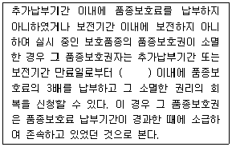
- 1개월
- 2개월
- 3개월
- 5개월
(정답률: 58%)
84. 납부기간 경과 후의 품종보호료 납부에서 품종보호권의 설정등록을 받으려는 자나 품종보호권자는 품종보호료 납부기간이 경과한 후에도 몇 개월 이내에 품종보호료를 납부할 수 있는가?
- 1개월
- 3개월
- 5개월
- 6개월
(정답률: 66%)
85. 포장검사 병주 판정기준에서 맥류의 특정병에 해당하는 것은?
- 줄기녹병
- 좀녹병
- 위축병
- 겉깜부기병
(정답률: 76%)
86. 품종목록 등재의 유효기간은 등재한 날이 속한 해의 다음 해부터 얼마까지로 하는가?
- 3년
- 5년
- 7년
- 10년
(정답률: 84%)
87. 최아율(발아세)에 관한 설명 중 ( )에 알맞은 내용은?
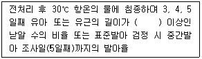
- 1mm
- 3mm
- 5mm
- 7mm
(정답률: 49%)
88. 순도분석에서 “가늘고 곧거나 굽은 강모, 벼과에서는 통상 외영 또는 호영(glumes)의 중앙맥의 연장”에 해당하는 용어는?
- 망(arista)
- 포엽(bract)
- 부리(beaked)
- 강모(bristle)
(정답률: 50%)
89. 품종명칭등록 이의신청 이유 등의 보정에 관한 설명 중 ( )에 알맞은 것은?
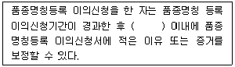
- 10일
- 15일
- 20일
- 30일
(정답률: 61%)
90. 종자관리요강상 규격묘의 규격기준에서 뽕나무 접목묘 묘목의 길이는?
- 10 ~ 20cm
- 20 ~ 30cm
- 30 ~ 40cm
- 50cm 이상
(정답률: 64%)
91. 보증표시 등에서 묘목을 제외하고 보증종자를 판매하거나 보급하려는 자는 종자의 보증과 관련된 검사서류를 작성일부터 몇 년 동안 보관하여야 하는가?
- 3년
- 5년
- 7년
- 10년
(정답률: 52%)
92. 수분의 측정에서 저온항온건조기법을 사용하게 되는 종은?
- 피마자
- 조
- 호밀
- 수수
(정답률: 70%)
93. 식물신품종보호법상 종자위원회는 위원장 1명과 심판위원회 상임심판위원 1명을 포함한 몇 명 이상 몇 명 이하의 위원으로 구성해야 하는가?
- 3명 이상 9명 이하
- 10명 이상 15명 이하
- 18명 이상 21명 이하
- 23명 이상 27명 이하
(정답률: 67%)
94. 종자 검사신청에 대한 설명 중 가, 나에 알맞은 내용은?
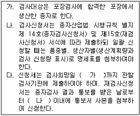
- 가 : 5일전, 나 : 30일
- 가 : 5일전, 나 : 15일
- 가 : 3일전, 나 : 30일
- 가 : 3일전, 나 : 15일
(정답률: 50%)
95. 사료용으로 활용하기 위한 벼, 보리의 수입적응성시험을 실시하는 기관은?
- 농업기술실용화재단
- 한국종자협회
- 농업협동조합중앙회
- 한국생약협회
(정답률: 44%)
96. 종자관리사의 자격기준 등에 관한 내용이다. ( )에 알맞은 내용은?
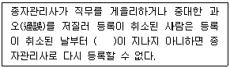
- 1년
- 2년
- 3년
- 4년
(정답률: 69%)
97. 종자관리요강상 사후관리시험의 기준 및 방법에 대한 내용이다. ( )에 알맞은 내용은?
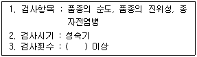
- 1회
- 3회
- 5회
- 7회
(정답률: 83%)
98. 서류의 보관 등에서 농림축산식품부장관 또는 해양수산부 장관은 품종보호 출원의 포기, 무효, 취하 또는 거절결정이 있거나 품종보호권이 소멸한 날부터 몇 년간 해당 품종보호 출원 또는 품종보호권에 관한 서류를 보관하여야 하는가?
- 1년
- 2년
- 3년
- 5년
(정답률: 51%)
99. 보증서를 거짓으로 발급한 종자관리사는 어떤 벌칙을 받는가?
- 1년 이하의 징역 또는 1천만원 이하의 벌금에 처한다.
- 1년 이하의 징역 또는 5백만원 이하의 벌금에 처한다.
- 6개월 이하의 징역 또는 5백만원 이하의 벌금에 처한다.
- 3개월 이하의 징역 또는 3백만원 이하의 벌금에 처한다.
(정답률: 83%)
100. 포장검사 및 종자검사의 검사기준에서 “합성시료 또는 제출시료로부터 규정에 따라 축분하여 얻어진 시료이다.”에 해당하는 용어는?
- 검사시료
- 분할시료
- 보급종
- 원종
(정답률: 61%)